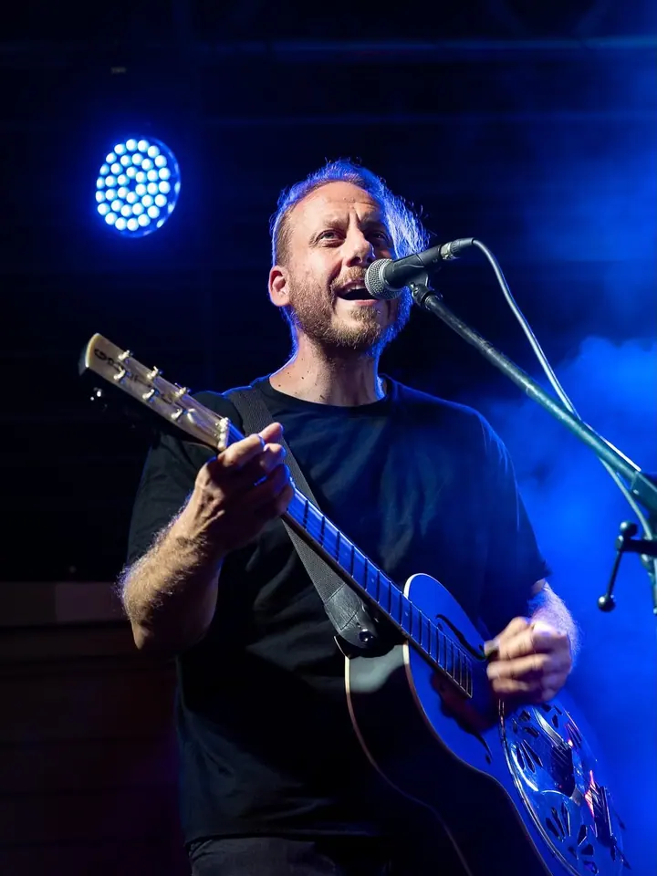
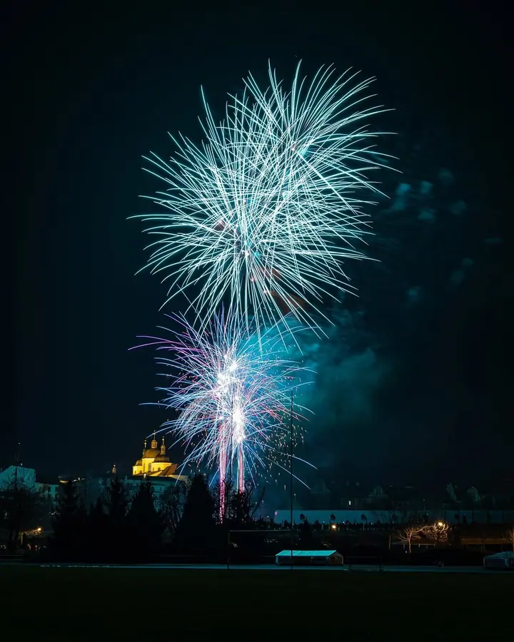
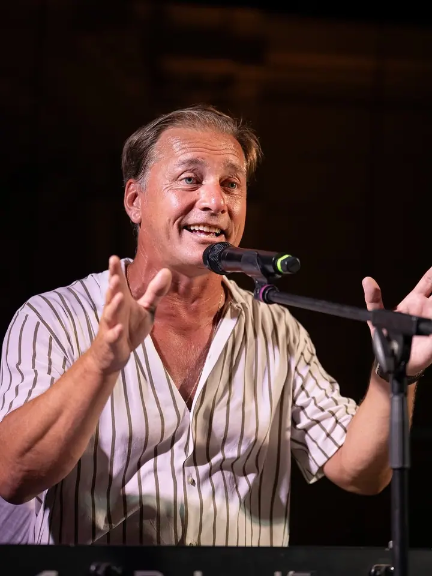
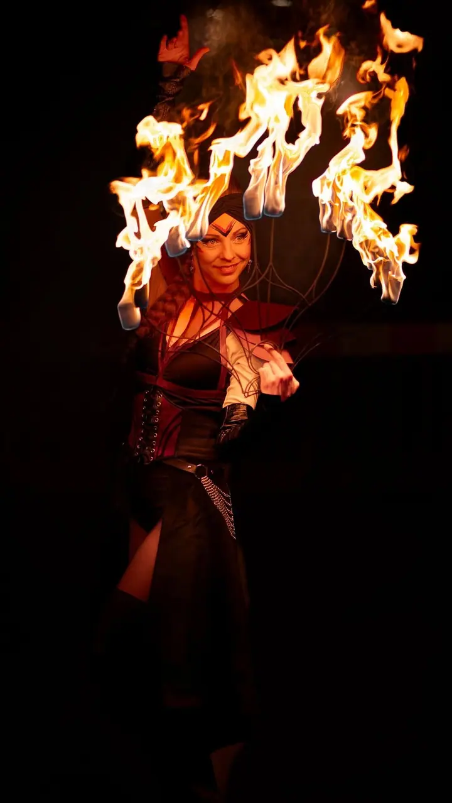
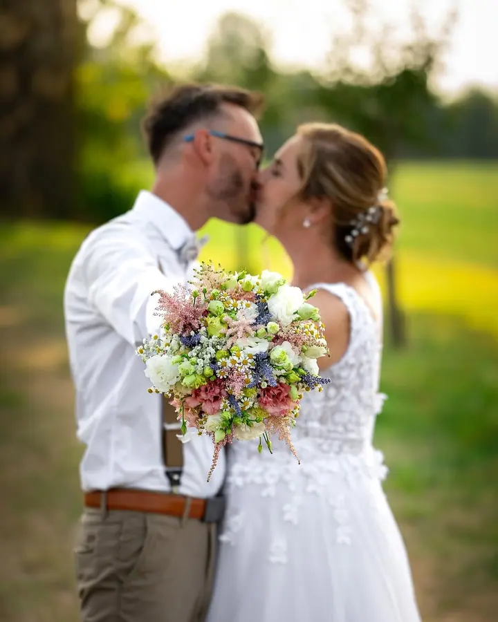
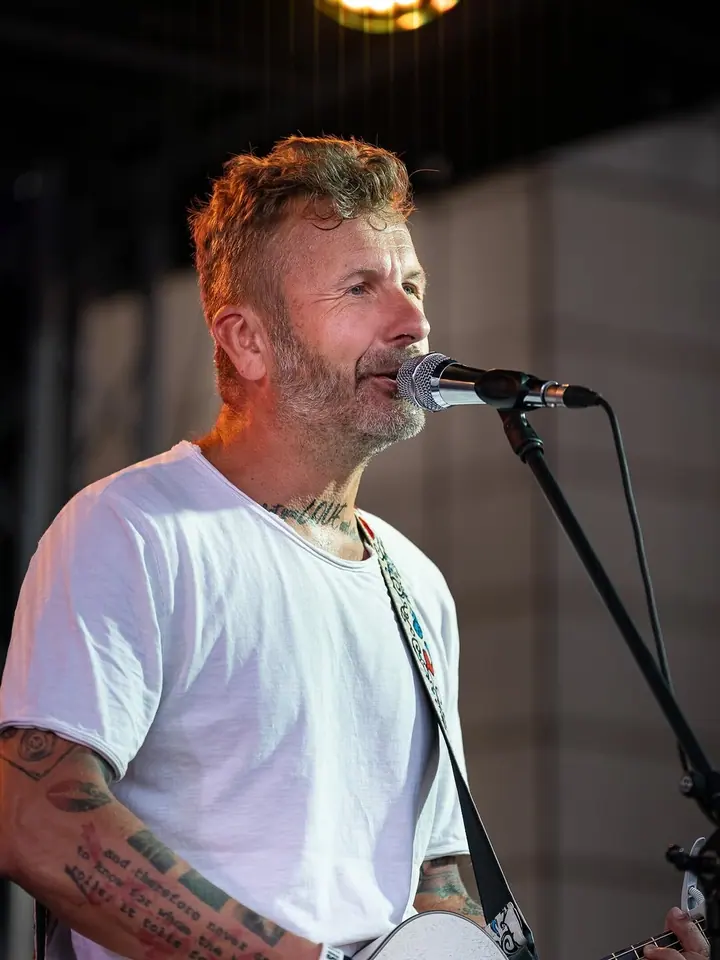
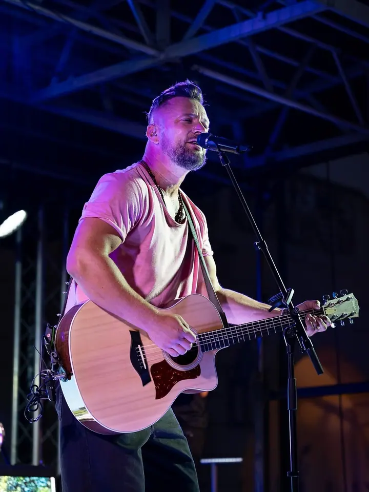
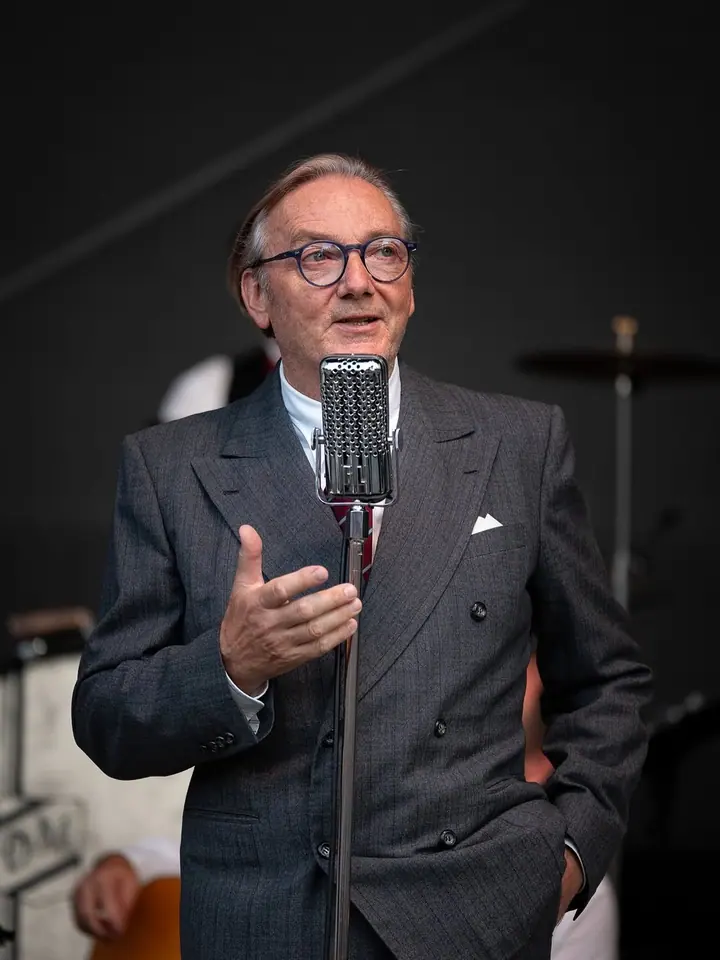
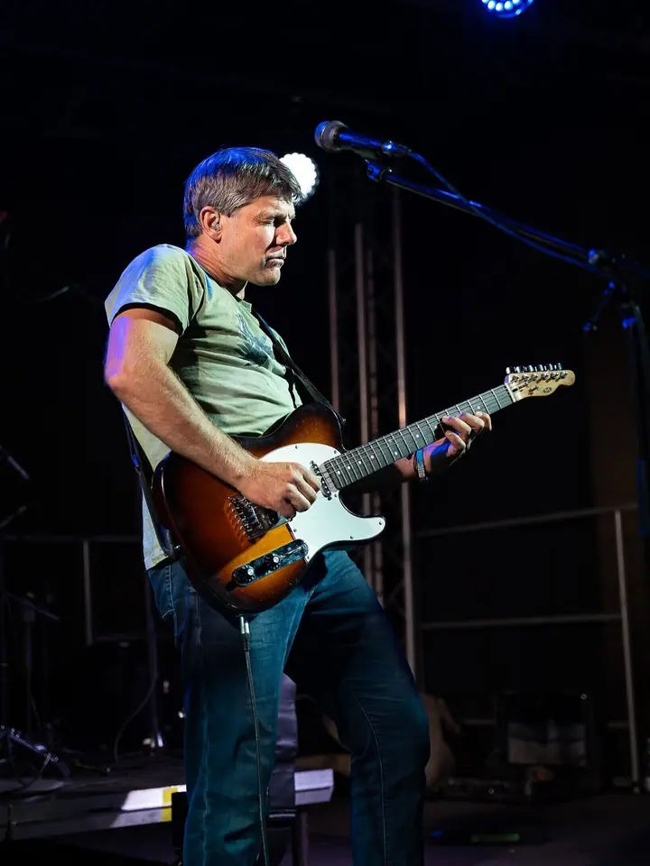

01 / 04
Reportážní fotografie
Fotím koncerty, konference a firemní, kulturní, společenské i sportovní akce. Výsledkem je ucelená série fotek připravená pro web, sociální sítě, média a vaši propagaci.
Zeptat se na termín→








Reportáže z koncertů, konferencí a firemních akcí
Zeptat se na termín →(01) Ahoj
Jmenuji se Jaroslav Pavel, ale klidně mi říkejte Jardo. Jsem fotograf a tvůrce videí z Olomouce a fotím hlavně reportáže z koncertů, konferencí a firemních akcí . Vedle toho natáčím reklamní videa, rozhovory a krátký obsah pro sociální sítě .
493lidí sleduje mou práci na Instagramu
120příspěvků s fotkami a příběhy
(02) Co dělám
01 / 04
Fotím koncerty, konference a firemní, kulturní, společenské i sportovní akce. Výsledkem je ucelená série fotek připravená pro web, sociální sítě, média a vaši propagaci.
Zeptat se na termín→Dále nabízím
Natáčím reklamní a prezentační videa, rozhovory, podcasty, reportáže, záznamy akcí a krátká videa pro sociální sítě.
↗Fotím osobní, profesní a firemní portréty jednotlivců i celých týmů.
↗Produkty, nemovitosti, interiéry nebo kombinace fotek a videa podle konkrétního zadání. Každou zakázku naceňuji individuálně podle přípravy, rozsahu a požadovaných výstupů.
↗(04) Postup
Od první zprávy po hotovou galerii.
Krok 1 z 4
Stačí stručně popsat, co potřebujete nafotit nebo natočit, přibližný rozsah, termín a místo.
Krok 2 z 4
U reportáže vyberete jeden ze tří balíčků, ostatní zakázky nacením individuálně s jasným rozsahem, termínem a konečnou cenou. Před akcí si krátce upřesníme zadání.
Krok 3 z 4
Přijedu na místo a pracuji tak, aby výstupy odpovídaly tomu, k čemu je budete používat.
Krok 4 z 4
Fotky vyberu a upravím a pošlu je online odkazem ve vysokém rozlišení i v menší verzi pro web. Standardně do 3–5 pracovních dnů.
Světla, pódium a lidé ve správnou chvíli
(05) Za objektivem
Jsem Jarda, fotograf a tvůrce videí z Olomouce. Zaměřuji se hlavně na reportážní a zakázkovou tvorbu pro firmy, instituce, projekty a pořadatele akcí.
Fotografuji kulturní, firemní, společenské a sportovní události, portréty, produkty i nemovitosti. Vedle fotografie tvořím reklamní a prezentační videa, rozhovory, reportáže a obsah pro sociální sítě.
Zakázku vždy přizpůsobuji jejímu účelu, prostředí a tomu, kde budete výstupy používat. Dodám samostatné fotografie, video nebo kombinovaný obsah pro web, sociální sítě, média a propagační materiály.
Jaroslav
Jaroslav Pavel · Reportážní fotograf a videomaker
Krátká reportáž do 60 minut stojí 3 500 Kč, standardní do 2 hodin 5 000 Kč a rozšířená do 4 hodin 8 000 Kč. Každá další hodina je za 1 500 Kč. Ceny jsou konečné, nejsem plátce DPH.
Standardně do 3–5 pracovních dnů. Fotky dostanete online odkazem ke stažení, na přání i v soukromé webové galerii dostupné 30 dní.
Ano. Běžné užití na vašem webu, sociálních sítích, v médiích a vlastní propagaci je součástí každého reportážního balíčku.
Ano. Doprava v rámci Olomouce je v ceně, dopravu mimo Olomouc a případné další náklady vám vždy potvrdím předem.
(07) Kontakt
Napište pár vět o tom, co si představujete, a termín, který se vám hodí.
info@jaroslavpavel.cz